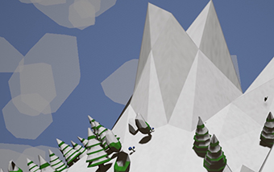
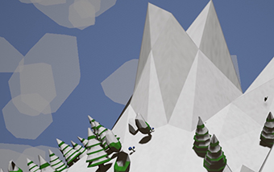
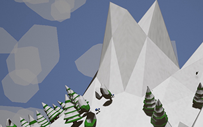

What if you could be a firefly? Hervé a Firefly’s Journey is a contemplative experience designed and developed for the Oculus Rift. The project tries to create the fly sensation in an immersive universe. We used Unreal Engine and Blender to build this unique journey. Please, check out this website for more images.
